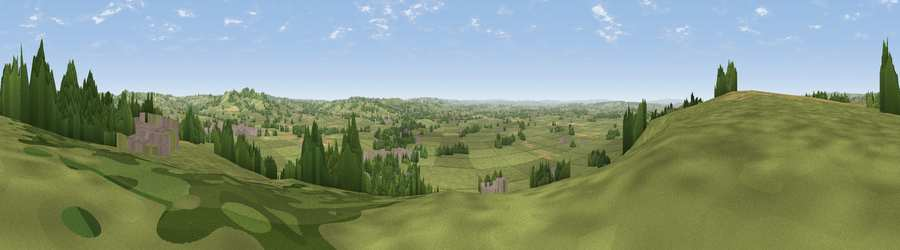

Ditcheat Hill
#13312 in England · top 26% of its area beats it · near DitcheatThe view, rendered

A 360° render of this exact spot computed from the terrain model, tree cover and land cover — summer colours, afternoon light, calibrated against photographs of famous viewpoints. Real trees, hedges and buildings will differ in detail.
The panorama
Grey silhouette: terrain skyline in each direction (720 bearings, Earth curvature and refraction included). Dashed green: skyline with trees (+15 m) and buildings (+8 m) as obstacles. Blue strip: how far the ground is visible on each bearing.
Where the view opens
Wedge length = distance to the farthest visible ground on that bearing (vegetation-aware). Rings at 10, 25 and 50 km.
What fills the view
75% grassland · 11% woodland · 10% cropland · 4% built-up
Angular shares of the visible panorama (visual magnitude), not map area. Landscape diversity 0.35 (0–1 Shannon).
Key numbers
More beautiful places nearby
The staircase of upgrades: each row has a higher view potential than everything closer. Driving times are estimates from straight-line distance, calibrated against real road routing — check an actual route before setting out.
| Place | Direction | Drive | Score |
|---|---|---|---|
| Viewpoint near Ditcheat | WNW · 0 km | ~1 min | 63.0 |
| Viewpoint near Pylle | WNW · 1 km | ~3 min | 65.1 |
| Viewpoint near Milton Clevedon | E · 5 km | ~10 min | 73.9 |
| Viewpoint near Lamyatt | E · 5 km | ~11 min | 77.8 |
| Beacon Batch | NW · 25 km | ~40 min | 79.4 |
| Bleadon Hill [Loxton Hill] | NW · 32 km | ~50 min | 79.6 |
| Lewesdon Hill | SSW · 40 km | ~59 min | 83.3 |
| Viewpoint near West Bagborough | W · 44 km | ~64 min | 84.3 |
51.12989, -2.54336 · source: osm peak · position refined by local search. Computed location — check access rights before visiting.